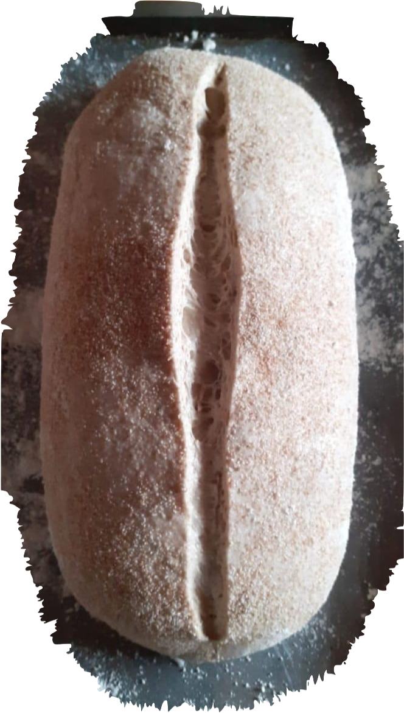

Este taller está destinado para principiantes tanto como para quienes ya tengan conocimientos previos del mundo de la ferementación natural. Dos encuentros de tres horas aproximadamente donde veremos de punta a punta el proceso del pan. Desde cómo crear una masa madre desde cero, como utilizarla y cómo mantenerla saludable hasta el horneado de nuestro propio pan. En este proceso, abordaremos todas las instancias y despejaremos juntos las dudas que vayan surgiendo en este hermoso viaje de hacer nuestro propio pan.


En este taller veremos el complejo mundo del hojaldre. Destinado a quienes ya tengan conocimiento previo en el mundo de la pastelería, este taller tiene el objetivo de revelar todas las técnicas que nos permiten realizar de manera prolija y concisa uno de los mayores desafíos de la pastelería moderna: la medialuna. A lo largo de este taller, veremos el proceso de amasado, el correcto empaste, los tiempos, el formado y el horneado de este emblema de la pastelería argentina.
Armado de proyectos de panadería y pastelería. Métodos de planificación, desarrollo de productos, orientación de compras de equipos, capacitación de personal. Fórmulas, recetas, uso correcto de equipos y materias primas.